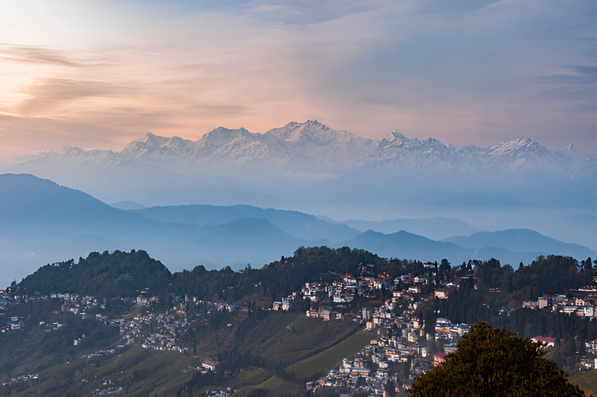

Darjeeling
Known as the Queen of the Hills, Darjeeling is famous for its tea gardens, breathtaking views of Kanchenjunga, and colonial charm.
Popular Spots
- Darjeeling Himalayan Railway
- Tiger Hill
- Japanese Peace Pagoda